|
"Catch
as Catch Can"
Can WordGirl prevent a cumbersome meteorite from destroying the city?
|
|
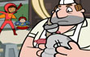"Enter, the Butcher"
WordGirl meets the Butcher, master of meat and mangler of words, and tries to prevent him from robbing a bank. WordGirl also tries to convince the Butcher
that he’s not “a fender” but “offended” when she tells him he “butchers the English language.”
|
|
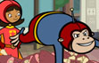"Re-enter, the Butcher"
WordGirl tries to stop the Butcher from robbing Ye Olde Fancy Schmancy Jewelry Store. They also have to deal with a pompous store clerk.
|
|
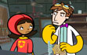"What's Up, Doc?"
WordGirl pays a visit to Professor Steven Boxleitner (author of the book Superheroes and You: A Practical Guide) to figure out a way to stop the vicious Butcher.
|
|
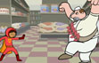"Re-Re-enter, the Butcher"
WordGirl tries to prevent the Butcher from robbing a grocery
store. She also tries to clear up a misunderstanding between
the Butcher and the Grocery Store Manager, who believes that
the Butcher is there for a job.
|
|
"Yes Sir, That's My Butcher"
WordGirl and the Butcher face off for their big, big battle royale. WordGirl reveals her secret weapon: her always hungry ally, Captain Huggy Face.
|
|
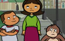"The Crazy World of Doctor
Two-Brains"
In a lab experiment that goes horribly wrong, Prof. Steven Boxleitner accidentally fuses his mind with that of his vicious lab mouse and becomes
the villainous Dr. Two-Brains. Becky (WordGirl’s secret identity) tries to distract her little brother TJ so she can transform into WordGirl and capture Dr. Two Brains before he goes on a cheese-stealing rampage.
|
|
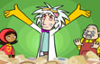"Two Brains in the Grocers"
WordGirl tries to capture Dr. Two Brains after he eats all the cheese in the grocery store, but Dr. Two Brains is able to escape by causing a ruckus.
|
|
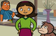"The Times, They Are A-Cheesy"
The Botsford family (including Becky Botsford, a.k.a WordGirl) are flabbergasted when Dr. Two Brains appears on television, threatening to turn the city into goop if he doesn’t get every piece of cheese in the city.
|
|
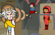"Mouse Trap"
WordGirl and Captain Huggy Face confront Dr. Two Brains at his secret hideout. Dr. Two Brains proves that their attacks on him would
be futile by capturing them in his giant mousetrap. Will they escape, or will Dr. Two Brains succeed in turning them into goop?
|
|
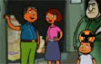"Squeaky's Machine"
Dr. Two Brains is about to use his Goop Ray to give WordGirl and Captain Huggy Face a “one-way ticket to Goop Town.” Can they escape this
predicament while Dr. Two Brains is distracted by cheese related questions from the Botsford family?
|
|
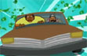"Driving Miss Granny"
A new villain’s in town! Granny May and her timid (and enormous) grandson Eugene rob an armored car in broad daylight. Will WordGirl be able to catch up with them?
|
|
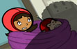"Kiss My Granny"
While trying to stop Granny May from robbing Ye Olde Fancy Schmancy Jewelry store, WordGirl and Captain Huggy Face are blinded by Granny’s
dazzling jewelry, then captured in her knitted “Web of Yarn.” Will they be able to escape before Eugene crushes them in a game of “squish the knitting”?
|
|
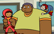"Living in the Granny's Paradise"
Although WordGirl and Captain Huggy Face are able to use their coordination to escape Granny’s trap, they are soon
caught in the unbreakable grip of Eugene. Will they be able to break free and stop Granny from escaping with the stolen jewelry?
|
|
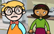"Play Date"
After destroying a giant, rampaging robot as WordGirl, Becky returns home to find that she has an unexpected playdate with Theodore MacCallister III.
When Becky discovers that Theodore is actually “Tobey,” the mischievous genius behind the giant robot’s rampage, she risks revealing her secret identity.
|
|
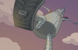"Tobey or Not Tobey"
Tobey and Becky argue over whether Tobey’s Robot caused real damage to the city or only a minor hullabaloo. Tobey decides to play a game with Becky to see if she’s really WordGirl or not.
|
|
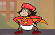"The Wrath of Tobey"
Tobey gives Becky an impossible choice: reveal herself as WordGirl and destroy the robot threatening her house or
do nothing and watch her house get demolished. Becky and Bob (a.k.a. Captain Huggy Face) initiate Emergency Plan #47, with mixed results.
|
|
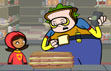"Chuck, the Evil Sandwich Making Guy"
Chuck, the Evil Sandwich Making Guy threatens to squash the Grocery Store Manager with his giant sandwich press after the Owner calls
the press “extreme.” Can WordGirl stop him in time? Will Scoops ever get the sandwich he ordered?
|
|
 "Name That Dude" "Name That Dude"
WordGirl and the Narrator have a hard time not laughing at Chuck, the Evil Sandwich Making Guy’s name. Chuck captures WordGirl with his noxious “Pickled Eggs.”
As WordGirl, Scoops, and the Grocery Store Manager head towards certain doom on the giant sandwich press, all of them try to think of a less absurd name for Chuck. Meanwhile, Captain Huggy Face races to the rescue.
|
|
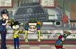"Chucky
and the Sandwich Factory"
WordGirl sends Captain Huggy Face to search for the “ultimate crowbar” in order to help them escape Chuck, the Evil Sandwich Making Guy’s giant sandwich press.
Will Captain Huggy Face be able to find the “ultimate crowbar” in time?
|
|
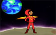"Movie Trailer"
The origin story of WordGirl and Captain Huggy Face
|
|
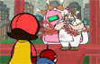"WordGirl and the Butcher"
WordGirl tries to prevent the Butcher from setting off his “Steak
Bomb” and ruining the day of vegetarians city-wide.
|
|
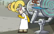"WordGirl and Dr. Two-Brains"
Dr. Two Brains becomes frustrated with a malfunctioning trap.
|
|
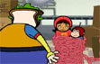"WordGirl and Chuck, the Evil Sandwich Making Guy"
WordGirl and Captain Huggy Face struggle to break free from
Chuck, the Evil Sandwich Making Guy's “Atomic
Hot Dog Lasso.”
|
|
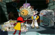"WordGirl and Dr. Two-Brains, part 2"
WordGirl tries to thwart Dr. Two Brains' latest scheme
but is distracted by a yummy mixed-fruit beverage.
|
|
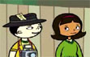"Becky and Scoops"
Scoops ponders WordGirl's secret identity while Becky
saves him from perils that he doesn't notice.
|
|
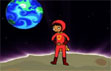"WordGirl and the Narrator"
WordGirl wants a new Super Hero name. She convinces the Narrator
to put his reputation on hold and announce the new name
she has in mind, just to see how it sounds.
|
|
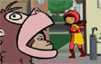"WordGirl and Captain Huggy Face, part 1"
WordGirl makes Captain Huggy Face try on some new costumes
because she feels his regular costume lacks pizzazz.
|
|
 "WordGirl and Captain Huggy Face, part 2" "WordGirl and Captain Huggy Face, part 2"
When Captain Huggy Face is late for a robot battle because
of the bus schedule, WordGirl suggests some other modes
of transportation.
|
|
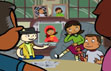"Becky and Mr. Botsford"
Despite certain clues, Mr. Botsford is oblivious about WordGirl's
secret identity.
|